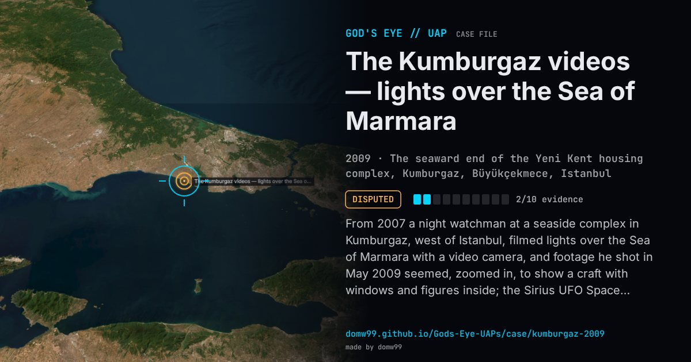

The Kumburgaz videos — lights over the Sea of Marmara

From 2007 a night watchman at a seaside complex in Kumburgaz, west of Istanbul, filmed lights over the Sea of Marmara with a video camera, and footage he shot in May 2009 seemed, zoomed in, to show a craft with windows and figures inside; the Sirius UFO Space Sciences Research Center took it up. Its head, Haktan Akdoğan, told the International UFO congress in Istanbul in June 2009 that the May footage had convinced even the most sceptical. The clips became some of the most watched UFO videos online. One segment carries the camera date May 17, 2009, 2:02 a.m.; other clips are dated 2008.
Explanation
Analysts who reconstructed the scene (the Metabunk forum) found that the camera faced east-south-east across the water toward the Güzelce marina and that its clock was unreliable, and proposed the lit windows of boats or yachts, ship lights and a lamp post; no single explanation has been agreed. The claim of “figures inside” rests on blurred, zoomed frames. The Sirius UFO centre, which released the videos, considers them genuine.
What was seen
Shape: A bright light that, zoomed in, shows a shape with what look like windows and dark heads
Witnesses: Yalçın Yalman, filming from the shore (described as a 51-year-old retired driver, and elsewhere as the complex’s night watchman)
Duration: Clips filmed over many nights from 2007 to 2009
Sources
- Cumhuriyet — “UFO’lar herkesi ikna etti” (June 13, 2009, in Turkish)
- Metabunk — 2008 UFO footage from Kumburgaz, Turkey